Una delegación del organismo se reúne de urgencia con el Gobierno brasileño en Brasilia.
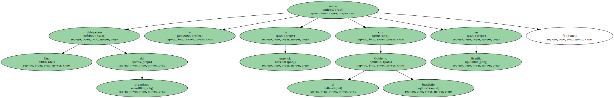El desplome del real provoca el miedo entre la población al ver cómo se disparan los precios.
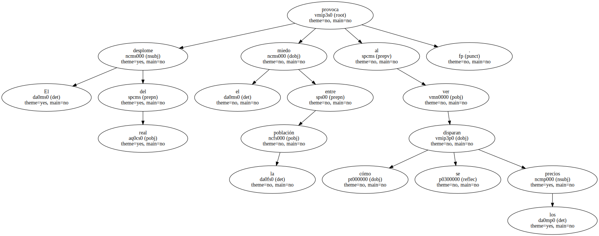El equipo económico del presidente brasileño , Fernando Henrique Cardoso , y una misión del Fondo Monetario Internacional ( FMI ) comenzaron ayer en Brasilia una reunión in extremis para intentar buscar soluciones a la grave crisis financiera que afecta a la economía del país latinoamericano.
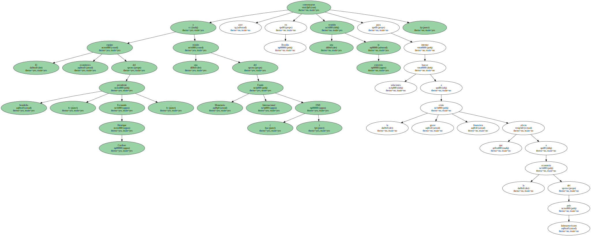La devaluación progresiva del real frente al dólar - - en enero la divisa brasileña cayó más del 70% , la sangría incontrolada de capitales y el pánico popular ante los rumores de que el Gobierno confiscaría las cuentas de ahorro y declararía la moratoria en los pagos de sus deudas , ha encendido todas las luces de alarma.
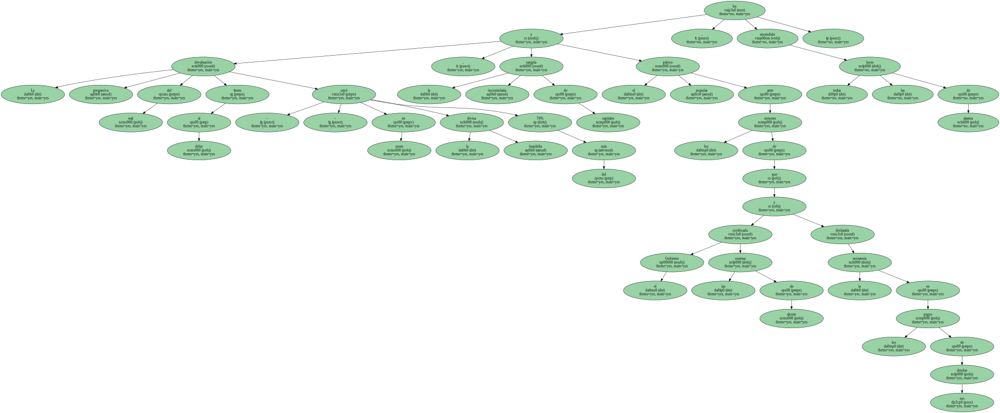En la agenda de la negociación figura el estudio de reglas de intervención del Banco Central ( emisor ) en el régimen de cambio , la revisión de algunas metas del acuerdo firmado con el FMI en noviembre pasado y el anticipo a Brasil del segundo desembolso de la ayuda de 41.500 millones de dólares que en 1998 acordaron el FMI y otros organismos internacionales.
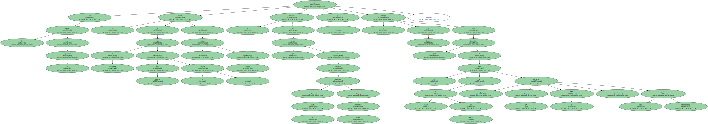El secretario ejecutivo del Ministerio de Hacienda , Pedro Parente , declaró minutos antes del comienzo de la reunión que las deliberaciones serán complejas y se prolongarán hasta el próximo miércoles.

Antes del martes - - hoy es festivo - - el Gobierno y la misión del FMI analizarán la situación de las cifras macroeconómicas del país y confrontarán los balances de las metas fiscales que el Fondo fijó para liberar la millonaria " ayuda preventiva ".
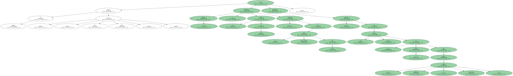El número dos del FMI , Stanley Fischer , salió ayer de forma precipitada de Davos ( Suiza ) hacia Brasilia para incorporarse a las negociaciones.
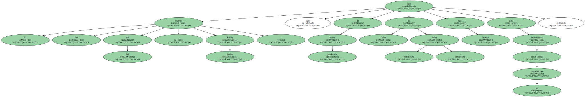" La llegada de Fischer es una señal de importancia sobre el trabajo que viene desarrollando el Gobierno brasileño " , dijo Parente.
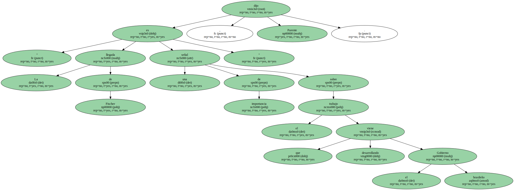Fischer señaló ayer en Davos antes de salir para Brasil que la devaluación del real ha ido " incuestionablemente demasiado lejos " , y si Brasil toma " resueltas medidas como en las dos últimas semanas " , el final de la crisis no está lejos.
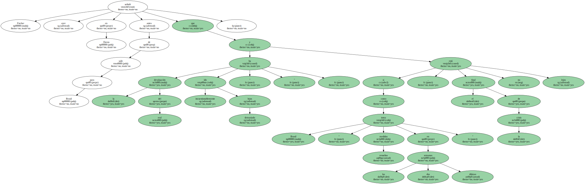" La mayor parte de lo que se ha hecho en el área fiscal se ha llevado a cabo en las dos últimas semanas , afortunadamente y desafortunadamente " , dijo Fischer.
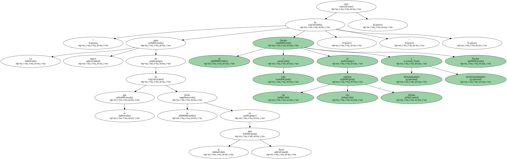" ¿ Por qué desafortunadamente ? - - se preguntó Fischer - - Pues porque si lo hubieran llevado a cabo hace tres semanas , esta crisis podría haberse evitado ".
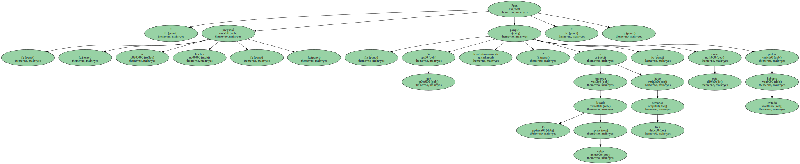Una encuesta publicada ayer por la Folha de Sao Paulo destaca que siete de cada 10 brasileños creen que la crisis " escapó del control del presidente ".
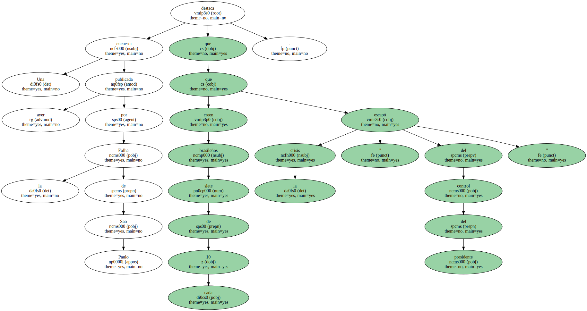El 60% de los encuestados responsabiliza al Gobierno de la inestabilidad económica y el 59% opina que Cardoso " engañó a sus electores " al afirmar que mantendría la estabilidad del real.
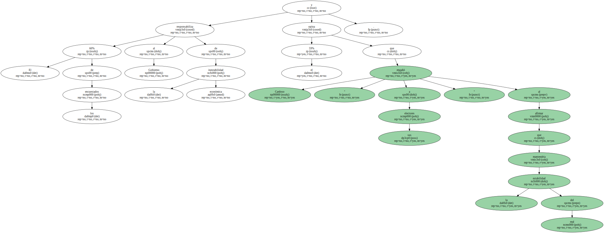Cardoso , de 67 años , que asumió en enero pasado su segundo mandato consecutivo de cuatro años , tenía entonces un 42% de aceptación popular y hasta el viernes pasado el índice había caído al 32% , el más bajo desde que llegó al poder en 1995.
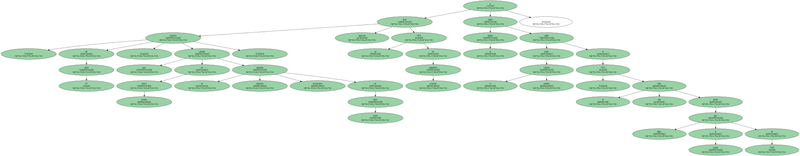La revista económica Carta Capital divulga un informe de la firma Lafis que vaticina para 1999 una inflación del 50% ( en 1998 fue del 2,49% ) , una tasa de cambio de 2,34 reales por dólar ( hasta el comienzo de la devaluación era de 1,23 ) y serias amenazas para la estabilidad del Mercosur.
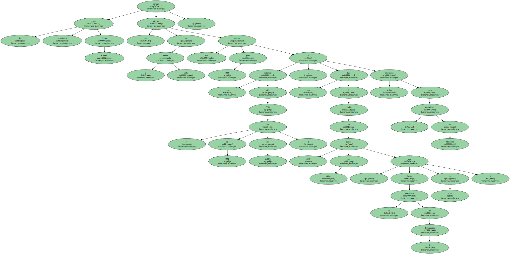Los costes de algunos productos básicos han subido en los últimos días más del 30%.
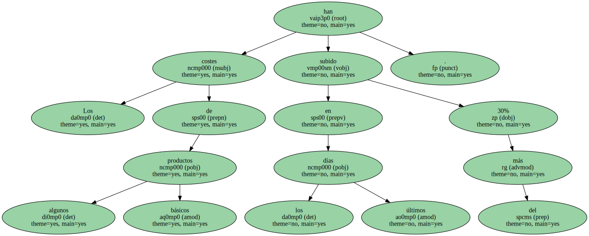Las diferencias de precios en algunos artículos llegan ya al 200% , según señalaba ayer el diario O Globo.
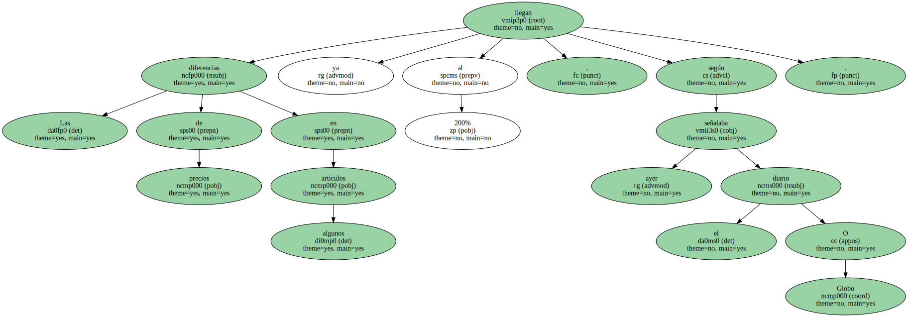